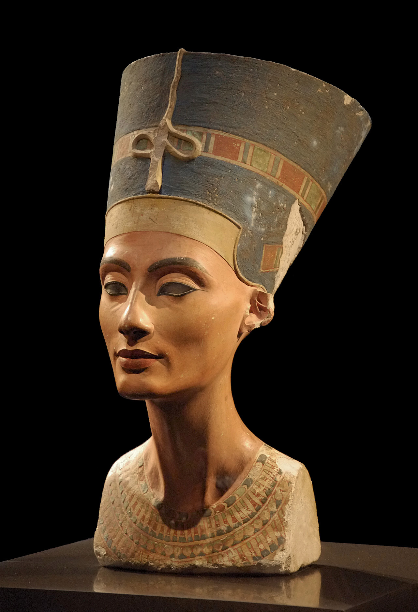

-

The last supper - Leonardo da Vinci
Het Laatste Avondmaal van Leonardo da Vinci.
Het is een afbeelding van een scène uit het Laatste Avondmaal van Jezus zoals beschreven in de Bijbel
en het is gebaseerd op Johannes 13:21-26 waarin Jezus aankondigt dat een van zijn twaalf discipelen hem
zal verraden. Het fresco is wereldwijd bekend en de opstelling is een iconografisch model. Omdat het niet
kan worden verplaatst is het nooit in particulier bezit geweest.
Ik heb het een paar jaar geleden toen ik in de Louvre inParijs was gezien. Het schilderij is heel groot en alle
details daarin zijn zeker ademnemend.
Ik beschouw het als mijn favourit "oud" schilderij. -

Nefertiti
Nefertiti was koningin van de 18e dynastie van Egypte en heerste als grote koninklijke vrouwe aan de zijde van Achnaton,
de farao die over Egypte regeerde aan het begin van het Nieuwe Rijk, van 1352 v.Chr. tot 1338 v.Chr., tijdens de Amarna-periode.
Haar naam Nefertiti betekent De mooie is gekomen.
Nefertiti staat nu in het Neues Museum in Berlijn waar ik ze voor het eerste keer kom zien.
Voor iemand die in Egypte woonde was het heel interessant om hun geschedenis ook te kennen en zeker de rijke kunst gedeelte. -

Rabina - Marcel van Luit
Rabina is een klein meisje uit een klein dorje in noord Tanzanje. De fotographer Lior vond dit dorpje
terwijl hij de watercrisis van Africa bedekte.
Marcel van Luit is een Nerderlandsche kunstenaar die vooral bekend is door zijn digital-art werkjes.